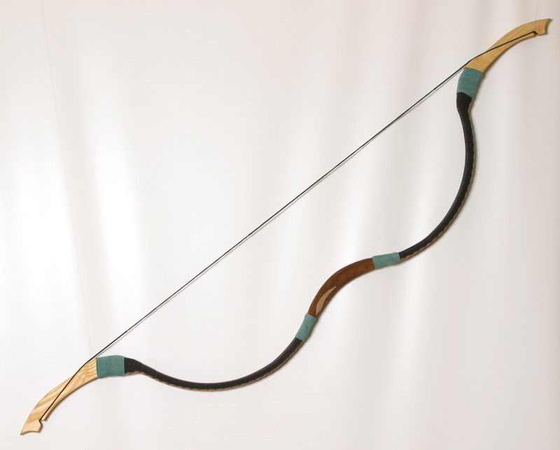
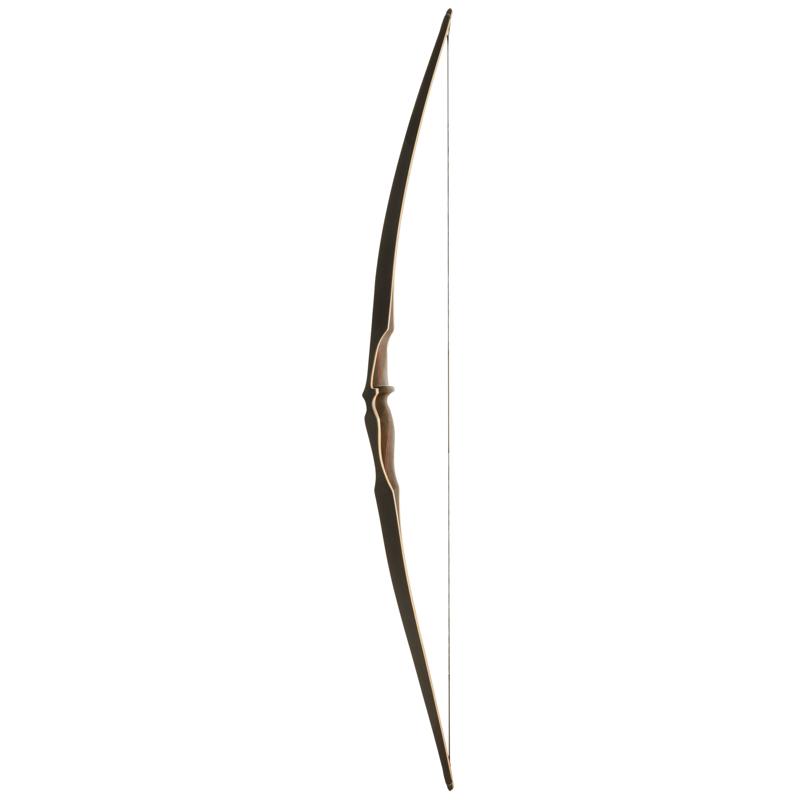
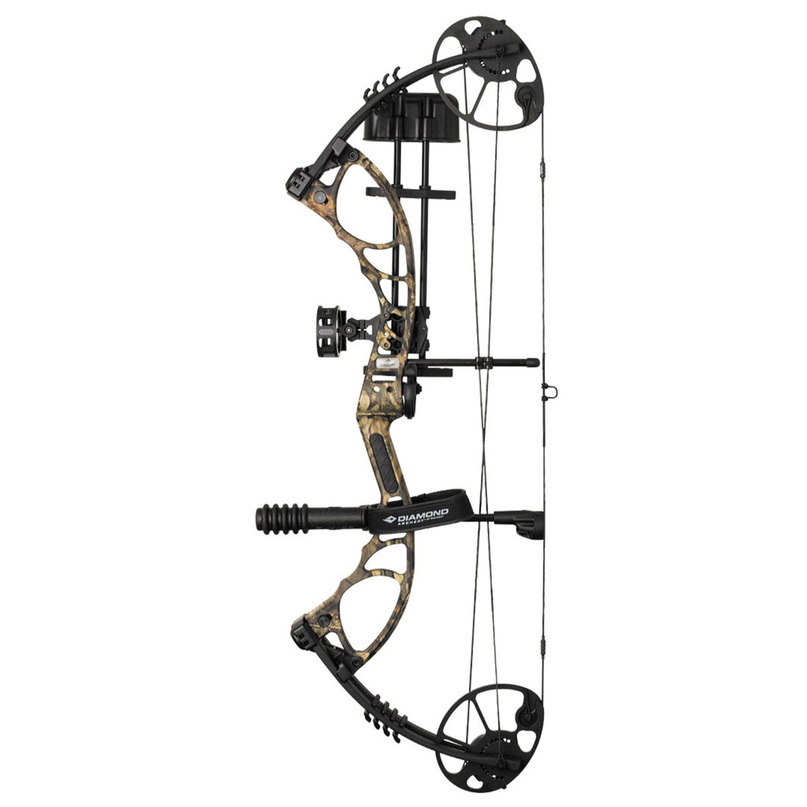

Bow Types
Traditional Bow
Traditional bows are types of archery equipment that
have been used for centuries. They are distinct from modern compound bows in terms of design,
materials, and the shooting experience.

Longbow
The longbow is a traditional type of bow that is characterized by its long length and relatively simple
design. It has been used by various cultures throughout history, most notably by the English during
the Middle Ages. Here’s a detailed breakdown of the longbow, including its history, design, and
significance.

Recurve Bow
An Olympic recurve bow is a type of bow used in Olympic archery competitions, where athletes
shoot arrows at a target from a distance of 70 meters. The recurve bow is characterized by its curved
limbs that bend away from the archer when unstrung, which gives the bow its name. These bows
are different from traditional longbows and compound bows in terms of design and mechanics.

Compound Bow
In modern archery, a compound bow is a bow that uses a levering system,
usually of cables and pulleys, to bend the limbs.[1] The compound bow was first
developed in 1966 by Holless Wilbur Allen in North Kansas City, Missouri, and a
US patent was granted in 1969. Compound bows are widely used in target practice and hunting.
